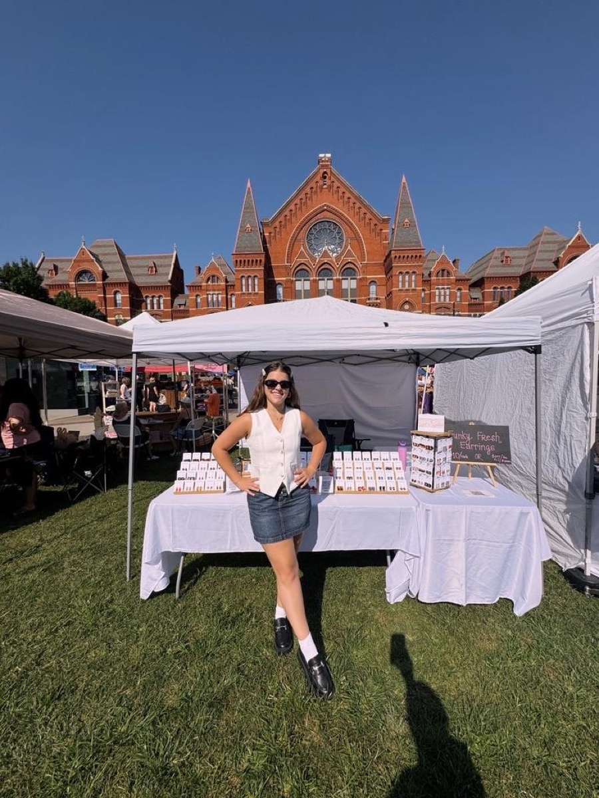
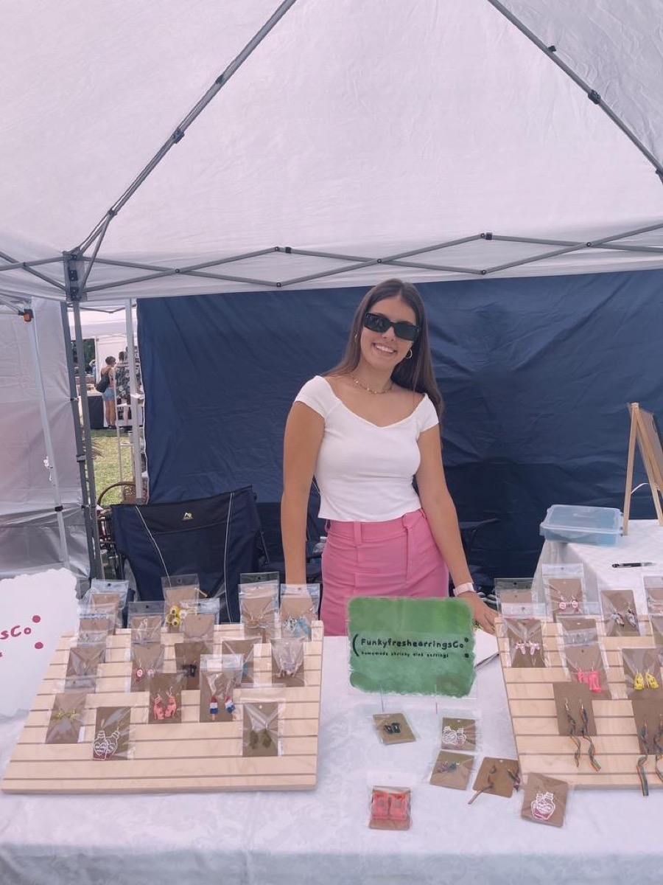

Handmade in Cincinnati, Ohio
Funky finds,
fresh energy.
Handmade shrinky-dink & clay earrings and one-of-a-kind watch purses, made one little kraft card at a time and sold table-side at the markets we love.

est. 2021It started with one pair of earrings the kids at the pool couldn't stop noticing. Five years later, Funky Fresh is a table full of handmade funky little things, made by hand and sold in person.
Founded by Samantha Neeb · Cincinnati, Ohio

Meet the maker
Samantha Neeb
Founder & maker · Cornell junior
Samantha is the creator and curator behind Funky Fresh, with equal parts science brain and creative energy, bringing both to every pair.
- 🎓Cornell University · JuniorAnimal Science, concentration in Applied Animal Biology & Management.
- 📈Double minor: Business & CommunicationsThe strategy and the storytelling behind the brand.
- ✨Maker-in-chiefEvery pair cut, shaped, and carded by hand in Cincinnati.
Five years, one table at a time.
From a poolside idea to the Cincinnati City Flea to the Cornell Creators Market. See how Funky Fresh grew up.
See the timeline →Say hi
Come find us
The fastest way to reach Funky Fresh is a DM on Instagram. Catch us in person at the Cincinnati City Flea and the Cornell Creators Market.